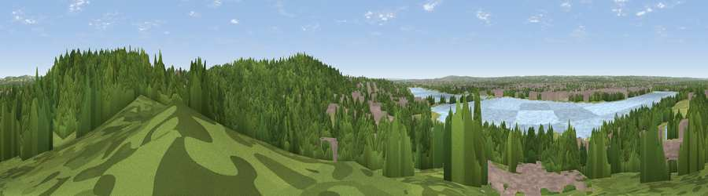

Yardley Hill
#29956 in England · top 11% of its area beats it · near SewardstoneburyWhere it is
The exact computed spot (TQ 38025 95875). Click the marker for map links.
The view, rendered

A 360° render of this exact spot computed from the terrain model, tree cover and land cover — summer colours, afternoon light, calibrated against photographs of famous viewpoints. Real trees, hedges and buildings will differ in detail.
The panorama
Grey silhouette: terrain skyline in each direction (720 bearings, Earth curvature and refraction included). Dashed green: skyline with trees (+15 m) and buildings (+8 m) as obstacles. Blue strip: how far the ground is visible on each bearing.
Where the view opens
Wedge length = distance to the farthest visible ground on that bearing (vegetation-aware). Rings at 10, 25 and 50 km.
What fills the view
49% woodland · 20% built-up · 18% grassland · 13% water
Angular shares of the visible panorama (visual magnitude), not map area. Landscape diversity 0.55 (0–1 Shannon).
Key numbers
More beautiful places nearby
The staircase of upgrades: each row has a higher view potential than everything closer. Driving times are estimates from straight-line distance, calibrated against real road routing — check an actual route before setting out.
| Place | Direction | Drive | Score |
|---|---|---|---|
| Viewpoint near Sewardstonebury | SSE · 1 km | ~3 min | 50.3 |
| Viewpoint near Wood Green | WSW · 10 km | ~20 min | 51.8 |
| Viewpoint near Eltham | SSE · 20 km | ~34 min | 52.2 |
| Viewpoint near Erith | SE · 22 km | ~36 min | 54.3 |
| Harrow on the Hill | WSW · 24 km | ~39 min | 60.7 |
| Viewpoint near Tatsfield | S · 40 km | ~60 min | 61.0 |
| Viewpoint near Limpsfield | S · 41 km | ~60 min | 62.7 |
| Viewpoint near Limpsfield | S · 41 km | ~61 min | 66.0 |
51.64474, -0.00657 · source: osm viewpoint · position refined by local search. Computed location — check access rights before visiting.